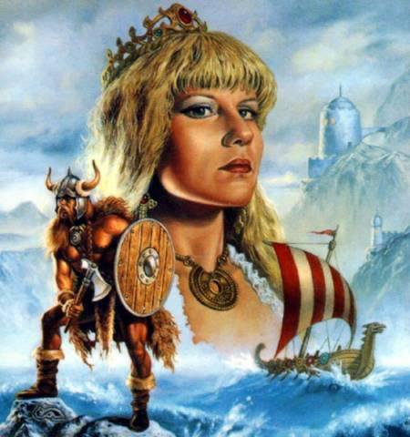

¿Qué es la Corte Vikinga?
La Corte Vikinga, también conocida como Corte Bárbara, es una de las cortes espirituales más fuertes y respetadas. Está compuesta por espíritus de antiguos guerreros nórdicos, marinos y conquistadores que vivieron aproximadamente entre los años 900 y 1000 d.C. Son entidades de gran tamaño y energía, conocidas por su capacidad de curación y su fuerza para resolver situaciones difíciles.
Espíritus Reconocidos
Entre los líderes más destacados de esta corte se encuentran:
- ⚔️ Erick el Rojo (Erick Thorvaldsson): Fundador del primer asentamiento en Groenlandia.
- ⛵ Leif Eriksson: Hijo de Erick, explorador de América del Norte.
- 👑 Mr. Bárbaro, Mr. Vikingo, Rey Vikingo.
- 🌍 Mr. Robinson, Mr. Smith, Mr. Johnson (Nombres adoptados en el espiritismo moderno).
Características en Sesión
Al bajar en una materia (medium), los vikingos suelen hablar un idioma mezclado entre lenguas nórdicas y un español rudimentario, o inglés antiguo. Son entidades muy serias, aunque a veces se les ha malinterpretado por espectáculos innecesarios de dolor. Un buen vikingo viene a curar y ayudar, no a lastimar a su materia sin sentido. A veces usan el "fakirismo" (agujas, hojillas) para drenar fluidos negativos o realizar curaciones complejas, pero siempre bajo control.
Atributos y Ofrendas
- Bebida: Whisky, Vino tinto, Brandy, a veces agua en bota de piel.
- Colores: Rojo (sangre/fuerza) y Naranja.
- Elementos: Capas rojas, Dagas, Cintas, Cascos con cuernos (simbólicos).
- Ofrendas: Cigarrillos, Tabacos, Flores rojas (pétalos que a veces comen), Frutas.
Es una corte hermosa que merece respeto y educación por parte de los mediums para canalizar su verdadera fuerza sanadora y protectora, lejos del circo y el morbo visual.